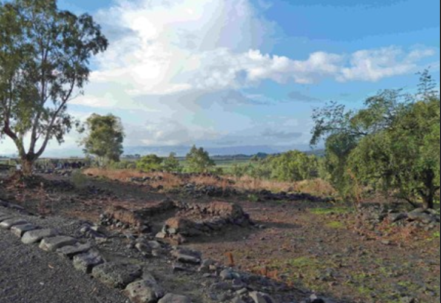
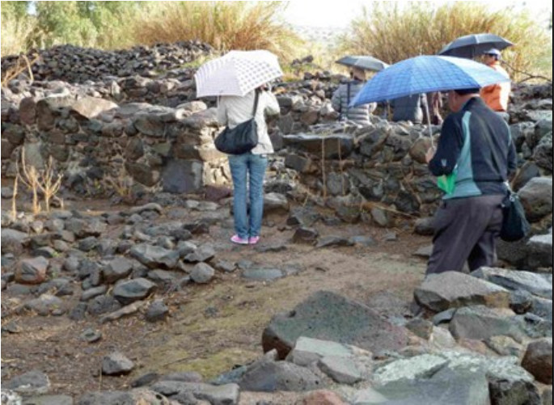
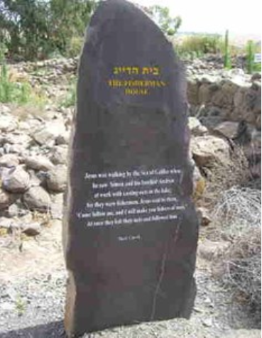
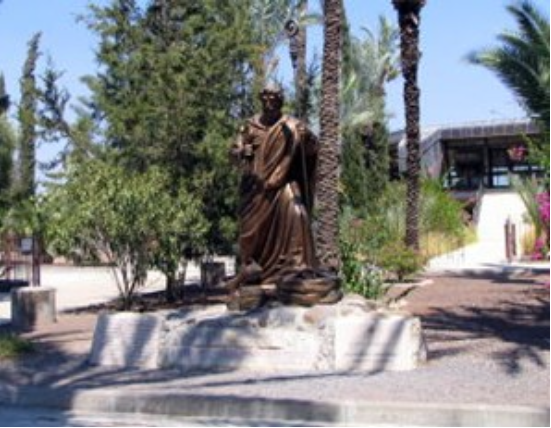
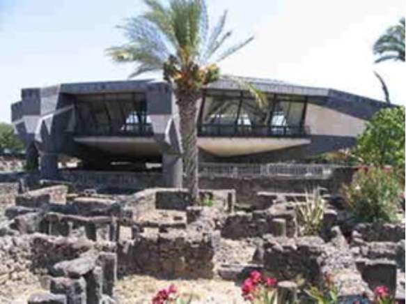
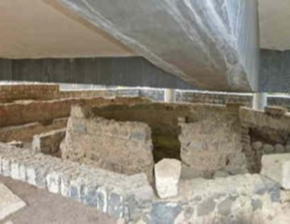

ガリラヤ湖の北側に、ベトサイダやカペナウムという町々があった。このベトサイダに住んでいたヨハネに男の子が生まれ、「シモン」と名づけられた。この人こそ後の「ペトロ」である。彼の弟の名はアンデレと言った (ヨハネ1章40節)。
シモンという名は、イスラエルでは古くから親しまれてきた名であった。だが後にイエスは、彼を「ペトロ (岩)」と呼ぶようになる。イスラエル十二部族の一つであるシメオン族に由来している。当時のユダヤ社会では、族長たちの名にちなんだ名前を子どもに与えることは珍しくなかった。
もっとも、シメオン族は歴史の中で早くからユダ族へ同化し、独立した部族としての存在感を失っていたと考えられている。そうした背景を思う時、「岩」と呼ばれる以前のシモンが、どこか埋もれた存在であったことも象徴的に感じられる。
ガリラヤの漁師たちは、単に網を打つだけの粗野な人々ではなかった。ローマ支配の重圧の中で、人々は日々の暮らしに追われながらも、神がいつイスラエルを救われるのかを待ち望んでいた。
シモンもまた、そうした時代の空気の中で生きていた一人であった。時に会堂で律法の朗読を聞きながら、彼は心のどこかで問い続けていたのではないだろうか。「神は、いつこの世界に介入されるのか」と。
後に、ペトロは、新約聖書の中でも最も人間味あふれる人物で、情熱的で衝動的な人物として描かれる。しかしその激しさの奥には、深い誠実さがあった。
ペトロは家庭を持ち、義母の看病をし、漁で家族を養っていた。つまり、彼は“生活者”だった。だからこそ、彼の語る希望や信仰は、現実の痛みを知った言葉だった。世界を動かすのは、特別な環境にいる人ではなく、日常の重さを知る人なのかもしかもしれない。
ガリラヤ湖の朝は早い。シモンは夜明け前に舟を出し、網を打ち、魚をより分け、また翌日の準備をした。来る日も来る日も同じ生活である。ペトロには家族がいた。彼は漁によって生計を立て、義母の病を気遣いながら日々を生きていた。
彼は特別な世界の人ではなかった。日々の暮らしの重さを知る一人の生活者であった。ローマの支配は重く、税は厳しく、人々の暮らしに余裕はなかった。それでも彼は働かなければならなかった。家族を養うためである。
だが、そんな日々の中でも、彼の心には消えない問いがあったのではないだろうか。「神は本当に、この苦しみをご覧になっているのか。」と。会堂で律法を聞きながら、彼は救い主の到来を待ち望んでいたかもしれない。しかしその時、彼はまだ知らなかった。やがて自分が、歴史を変える一人の人物と出会うことを。
ベトサイダは、ガリラヤ湖畔の小さな漁村で、ペトロの生まれ故郷。ペトロ、アンデレ、フィリポら最初の弟子たちは、この地で日々の生活を送りながら成長した。
現在は湖岸から離れているが、イエスの時代にはすぐ近くまで水辺が広がっていたと考えられている。そこには弟子たちの生活を知る手掛かりがある。ベトサイダは直訳すると「漁師の家」であるが、実際に魚釣りには最適な場所であった。



イエスの時代、人口は約200家族、1800〜2000名ほどの当時としては大きな町であった。後、ペトロは、カファルナウムに移り住み、ペトロの家の一室にイエスが住んでいたと言われている。
カファルナウムは、生活と召命の舞台である。イエスがガリラヤでの宣教活動の“本拠地”とした町であり、奇跡・教え・弟子たちとの生活が最も濃密に展開した場所である。ナザレを離れたイエスが「自分の町」と呼んだ唯一の場所でもあり、初期キリスト教の中心地のひとつとなった。
カファルナウムでは、役人の息子の癒し、「いのちのパン」の説教、そして徴税人マタイの召命など、多くの出来事が深く結びついている。


